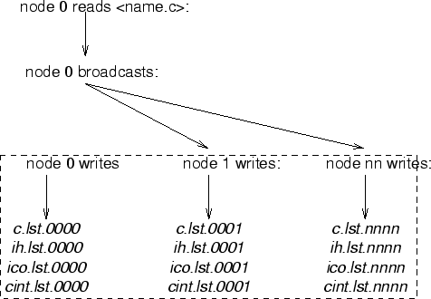

Once radial functions have been determined that simultaneously represent
several LS terms, providing a basis for a Breit-Pauli expansion of LSJ
wave functions, a configuration interaction calculation may be performed
for determining selected eigenvalues and wave functions expansions or
eigenvectors. In the present design the Breit-Pauli Hamiltonian is
represented as a sum of the non-relativistic Hamiltonian,  , and
the relativistic contribution,
, and
the relativistic contribution,  :
:
| (6) |
The relativistic part,  is a sum of the contributions of:
is a sum of the contributions of:
| (7) |
where the first four terms, mass, Darwin, spin-spin contact, and orbit-orbit, give a non-fine structure contributions, which are not J dependent. The last three, spin-orbit, spin-spin, and spin-other orbit define fine structure splitting.
The initial data, which the user interactively enters is processed by inp_atom(), brevala(), the user have the choice to select options about the calculation:
All angular data is generated in brevala(), which first requests from the user data about the operators to be included, and sets ISPORB,ISOORB,ISPSPN,IORBORB,ICOLOM to true if the corresponding operators if requested.
 |
Then, initial data about the type and the number of integrals is generated in genintbr():
genitbr() is an interface to comp_genitbr(), which performs the calculation of the integrals. comp_genitbr() is called twice, the first time, it only sweeps over all possible integrals without computing them, and the total number of integrals are determined. The total number of integrals is then used to allocate memory for intptr, value, which are correspondingly the arrays containing the integral and pointer data. In the next phase comp_genitbr() computes the integral data for all orbitals.
The main loop is over the entire configuration list and the data for matrix elements are generated by column. The interaction matrix is symmetric and only the lower or upper part needs to be evaluated. breitgg() generates the nonrelativistic hamiltonian assuming orthogonal orbitals. Thus the computational sequence is:
For column = 1 to ncfg
For row = column to ncfg
For each column, data is written to a set of files, described in 13.16, and further below:
DO jb = 1, ncfg
if(mod(jb,100).eq.0) write(ISCW,'(A,I5)') ' jb = ',jb
if(jb == ncfg) write(ISCW,'(A,I5)') ' jb = ',jb
CALL SHELLSJB(JB)
call BreitGG(NEW,NZERO,IFIRST,idg,skip,nze)
write(11) nih, (jan(i),i=1,nih);
write(12) nih, (ico(i),i=1,nih);
mycol = mycol + 1
jptr(mycol) = nij
end do
Figure 6.24 shows the steps of processing each configuration. All routines are from the angular library libang.a.
The only input file required is the configuration list, which needs to have a .c suffix. This file has the configurations for all terms that mix in the BP calculation. The list is obtained by concatenating the relevant configuration lists of each term. bp_ang reads cfg.inp until the first occurrences of an . Since each configuration list contains two header lines and an asterisk at the end, after concatenating the files, all header lines and asterisks in intermediate position need to be erased.
After a bp_ang calucaltion the user will find four binary files which contain the angular data and general information relevant to the number and type of orbitals, number of configurations:
DO jb = myid + 1, ncfg, nprocs
if(mod(jb,1000).eq.0) write(ISCW,'(A,I5)') ' jb = ',jb
if(jb == ncfg) write(ISCW,'(A,I5)') ' jb = ',jb
CALL SHELLSJB(JB)
call BreitGG(NEW,NZERO,IFIRST,idg,skip,nze)
write(11) nih, (jan(i),i=1,nih);
write(12) nih, (ico(i),i=1,nih);
mycol = mycol + 1
jptr(mycol) = nij
end do
Each node records the angular data in a separate file, and this is an important factor for accomplishing high efficiency of the parallel program. add data Note, that the each file has 4 digits for the processor ID, while nonh uses three digits.
|  |